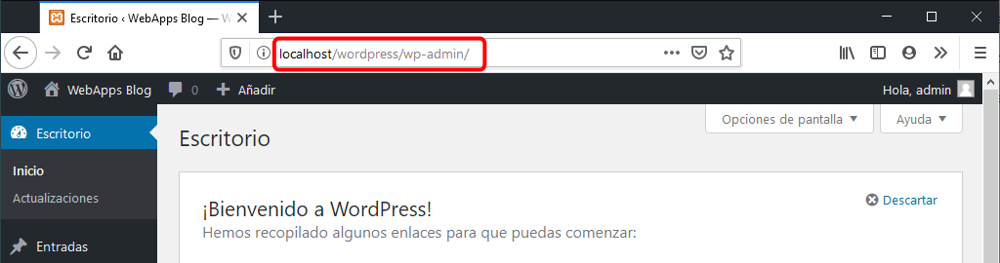
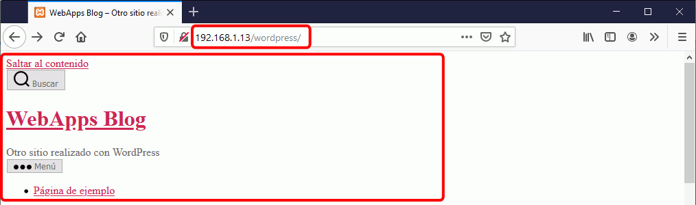
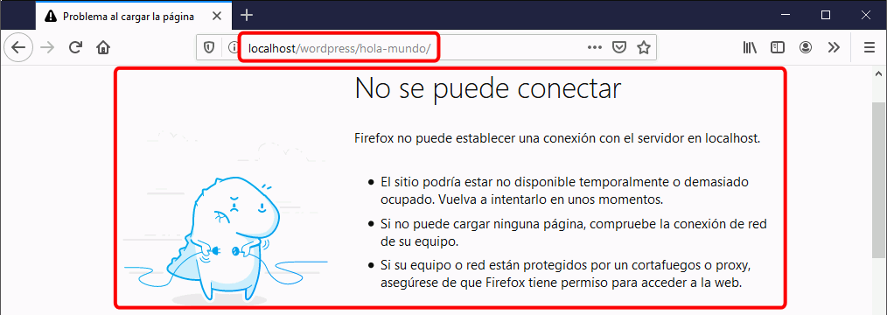
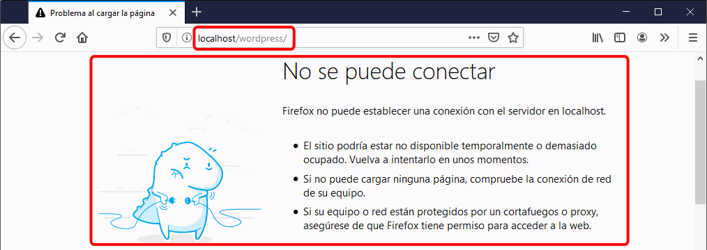
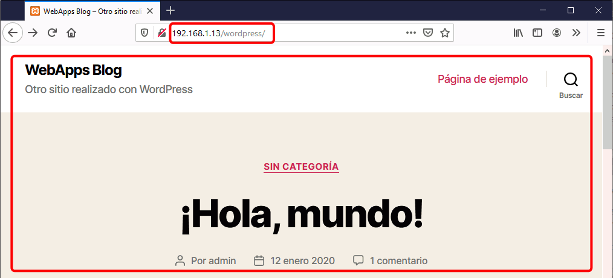
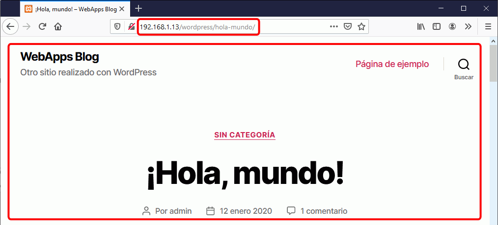
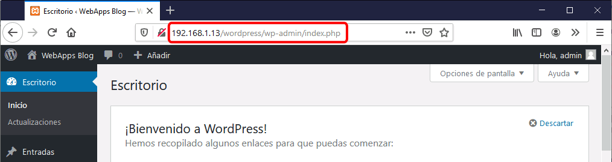

En esta lección se proponen ejercicios para conocer y utilizar WordPress. Se pueden consultar las soluciones de estos ejercicios de WordPress, aunque se recomienda intentar realizarlos primero sin recurrir a estas soluciones.
WordPress (1) 1 - Descargar
Como un ejercicio posterior consiste en la actualización de WordPress, en este ejercicio no se debe descargar la última versión de WordPress.
Visite la página web del proyecto WordPress en español.
Descargue la versión WordPress 4.9, en español. La versión inglesa se publicó el 16 de noviembre de 2017, pero la versión española puede ser posterior. Se recomienda esa versión ya que estos ejercicios se han preparado para ella.
Si la versión WordPress 4.9 en español ya no está disponible en la web del programa, puede descargarla desde la página de Descarga de aplicaciones.
Descomprima WordPress en la carpeta adecuada para poder ejecutarlo en el servidor local.
WordPress (1) 2 - Instalar
El objetivo de este ejercicio es instalar WordPress y comprobar que funciona correctamente.
Cree con phpMyAdmin un usuario de MySQL con nombre iaw_wordpress_1, contraseña iaw_wordpress_1 y base de datos iaw_wordpress_1.
Abra en el navegador la carpeta de Wordpress (http:/localhost/.../wordpress/) y complete la información de acceso a la base de datos.
Rellene la información necesario para crear el blog. Por ejemplo:
Título del sitio: Web Apps blog de NOMBRE-ALUMNO
Nombre de usuario: admin
Password: uno dos tres cuatro Para evitar que en el aula unos alumnos puedan entrar como administradores en las instalaciones de otros alumnos, se recomienda emplear otra contraseña. WordPress en sus recomendaciones sobre contraseñas aconseja utilizar gestores de contraseñas y en caso de no utilizar gestores de contraseñas, utilizar varias pabras comunes sin relación entre sí (lo que se denomina frase de contraseña, en inglés passphrase. La contraseña propuesta en el enunciado anterior (uno dos tres cuatro) no es segura, pero WordPress la considera suficiente.
Tu correo electrónico: dirección ficticia
Visibilidad para los buscadores: dejar desmarcado
Una vez instalado, visite el blog sin entrar como administrador. Se debe abrir una página similar a esta:
WordPress (1) 3 - Acceder como administrador
El objetivo de este ejercicio es comprobar que podemos entrar y salir de WordPress como administrador.
Desde la página principal del blog, acceda al formulario de acceso del blog. Entre como usuario administrador.
Compruebe que puede ver el panel de administración (denominado Escritorio):
Desde el Escritorio, compruebe que puede volver a la página principal del blog y volver de nuevo al Escritorio manteniendo la sesión de administrador:
WordPress (1) 4 - Actualizar
El objetivo de este ejercicio es comprobar que podemos actualizar WordPress desde el panel de administración.
Comentarios previos:
En general, antes de actualizar WordPress se recomienda realizar siempre una copia de seguridad completa. En este caso, como se acaba de instalar WordPress y no se ha introducido ninguna información adicional, la copia de seguridad se realizará después de la actualización (en el siguiente ejercicio).
WordPress actualiza automáticamente las versiones menores (4.9, 4.9.1, etc) por lo que antes de llegar a este ejercicio, el WordPress 4.9 instalado en los ejercicios anteriores ya se haya actualizado. La actualización que se mostrará es la del tema Twenty Seventeen.
Si se quiere probar una actualización, sería necesario instalar una versión anterior de WordPress (por ejemplo, la versión 4.8).
En caso necesario, actualice WordPress a la última versión disponible (actualmente -enero de 2018- WordPress 4.9.1), utilizando la actualización automática disponible en el escritorio de WordPress.
En su caso, actualice también los plug-ins, temas y traducciones, utilizando la actualización automática disponible en el escritorio de WordPress.
En estos ejercicios se ha utilizado el tema Twenty Seventeen (2017).
Compruebe que ya no quedan actualizaciones pendientes:
WordPress (1) 5 - Alias
El objetivo de este ejercicio es simplificar la URL de WordPress mediante el uso de alias de Apache.
Cree un alias para poder entrar en WordPress mediante la dirección http://localhost/wordpress/.
Compruebe que WordPress se muestra en la dirección http://localhost/wordpress/ pero parece haber problemas:
Compuebe que al hacer clic en el nombre del blog la dirección se redirecciona a la dirección completa http://localhost/ .... /wordpress/:
Configure WordPress para que la dirección del blog sea http://localhost/wordpress/.
La nueva dirección debe escribirse en dos campos que aparecen seguidos.
Compuebe que al hacer clic en la entrada de ejemplo la dirección no se redirecciona (ni tampoco al entrar como administrador):

WordPress (1) 6 - Enlaces permanentes (permalinks)
El objetivo de este ejercicio es modificar la URL de las páginas para que no aparezca la fecha en ellas. El motivo para no querer mostrar la fecha es que en un blog "puro" puede interesar útil que el visitante pueda ver la antigüedad de una entrada simplemente leyendo la URL, pero si estamos haciendo una web en la que las páginas contienen información permanente mostrar la fecha puede confundir al visitante, que puede pensar que la información es obsoleta si la fecha es antigua.
Compuebe que al hacer clic en la entrada de ejemplo la dirección sigue la sintaxis
http://localhost/wordpress/año/mes/día/nombre-entrada/:
Configure WordPress de manera que las direcciones sigan la sintaxis http://localhost/wordpress/nombre-entrada/.
WordPress (1) 7 - Acceso desde otros ordenadores
El objetivo de este ejercicio es modificar la URL de WordPress para que el sitio web sea accesible desde otros ordenadores.
Nota: En este ejercicio se cambia la URL general de WordPress, pero WordPress guarda la URL actual en muchos elementos (por ejemplo, imágenes insertadas). Por tanto, si hubiera que cambiar la URL de un sitio, no sólo habría que cambiar las direcciones generales que se cambian en este ejercicio, sino que habría que cambiar también todas las otras direcciones (manualmente o mediante plug-ins como Search and Replace).
Compruebe que al acceder al blog desde otras máquinas, el blog no se ve correctamente (no se aplica la hoja de estilo) y los enlaces internos tampoco funcionan y cambian a localhost.
Nota: En los ordenadores del aula, como cada alumno tiene su propio servidor, las páginas pueden verse correctamente porque los enlaces a localhost obtienen la información del propio servidor. Sería conveniente apagar el servidor propio al ir a consultar el sitio de otro.



Configure WordPress de manera que se resuelva el problema.
La nueva dirección debe escribirse en dos campos que aparecen seguidos.
Compruebe que al acceder al blog desde otras máquinas, el blog se ve correctamente, los enlaces internos funcionan e incluso se puede entrar como administrador:



WordPress (1) 8 - Cambio de IP
El objetivo de este ejercicio es plantear los cambios necesarios en caso de un cambio del dominio (en nuestro caso, la IP del ordenador).
Si el servidor que aloja WordPress cambiara de IP, no se podría acceder al panel de administración de WordPress para modificar las direcciones de WordPress.
Piense cómo podría arreglar este problema y compruebe que puede hacerse.
Ayuda
Corrija el problema directamente en la base de datos.
WordPress (1) 9 - Copia de seguridad manual completa
El objetivo de este ejercicio es realizar una copia de seguridad manual completa. WordPress permite hacer copias de seguridad desde el panel de administración, pero en este ejercicio no se recurre a esta herramienta.
Realice la copia de seguridad de la base de datos como usuario iaw_wordpress_1, no como root de MySQL.
Realice una copia de seguridad manual completa de la instalación (en los nombres de archivo propuestos AA es el año, MM el mes, DD el día y NN el número de copia del día):
Comprima los archivos de la carpeta wordpress en un archivo comprimido (por ejemplo, wordpress_archivos_AAMMDDNN.zip).
Exporte desde phpMyAdmin la base de datos iaw_wordpress_1 a un fichero sql (por ejemplo, wordpress_db_AAMMDDNN.sql).
Escriba un archivo que explique qué blog se ha comprimido (por ejemplo, wp_backup_leeme_AAMMDDNN.txt).
Comprima todo lo anterior en un único zip (por ejemplo, wordpress_AAMMDDNN.zip).
Una vez realizada la copia, borre la carpeta de WordPress y elimine todas las tablas de la base de datos.
Restaure la copia de seguridad (descomprima los archivos e importe la copia de seguridad en phpMyAdmin).


{kind=link}